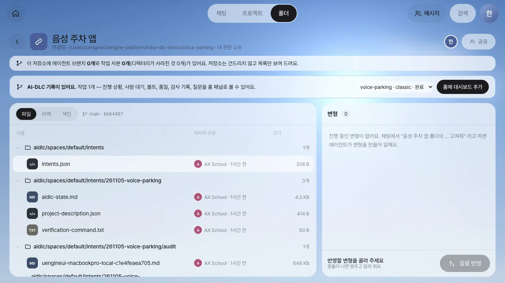
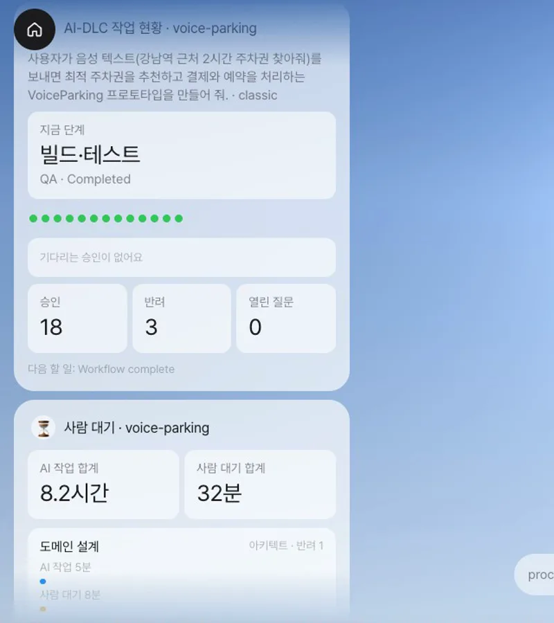
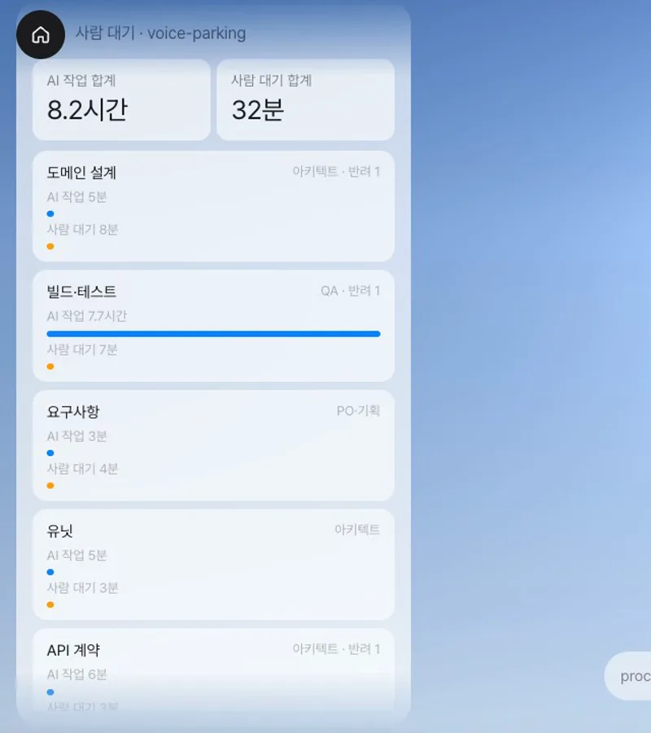
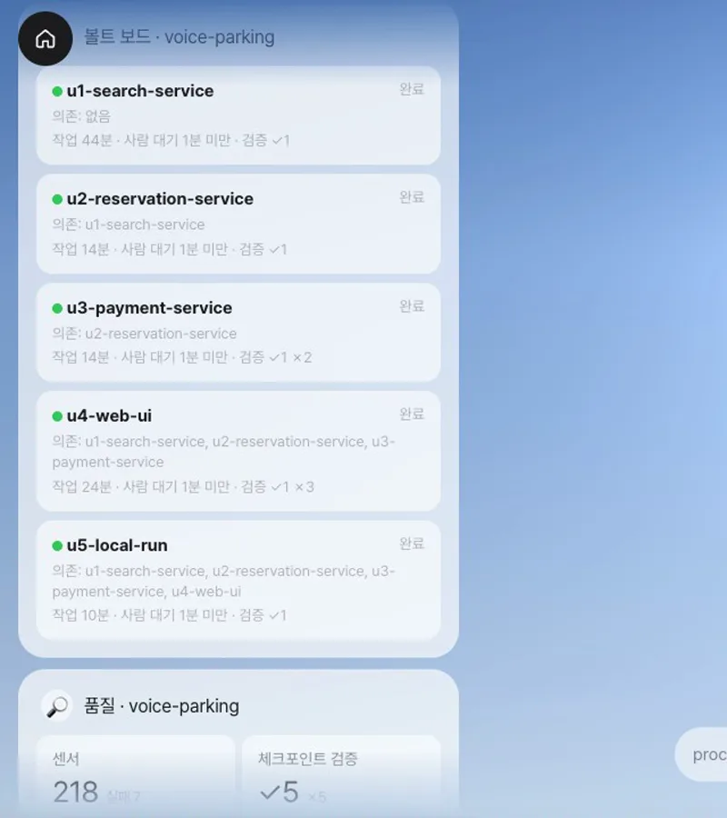
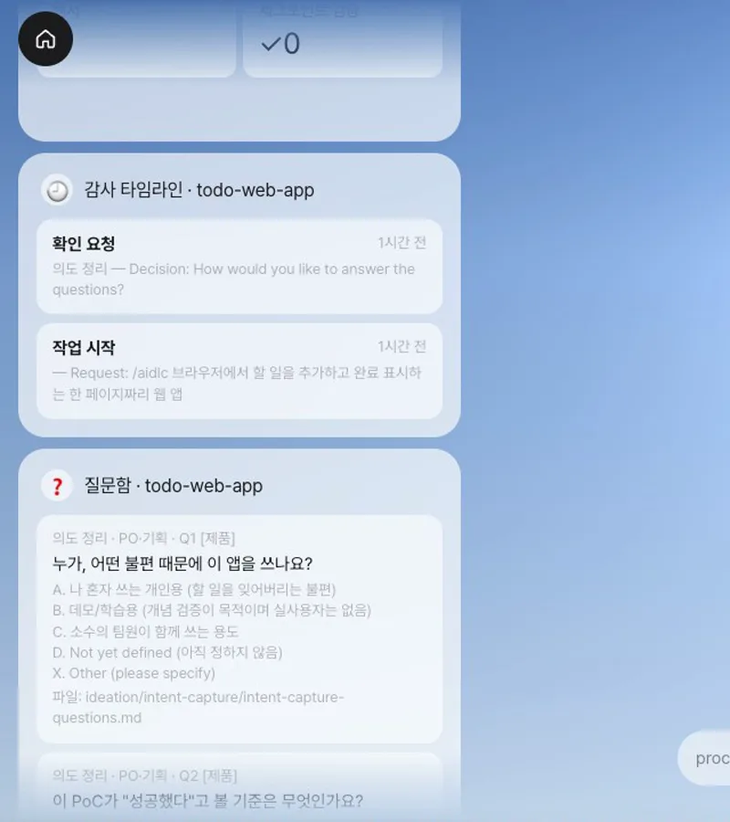
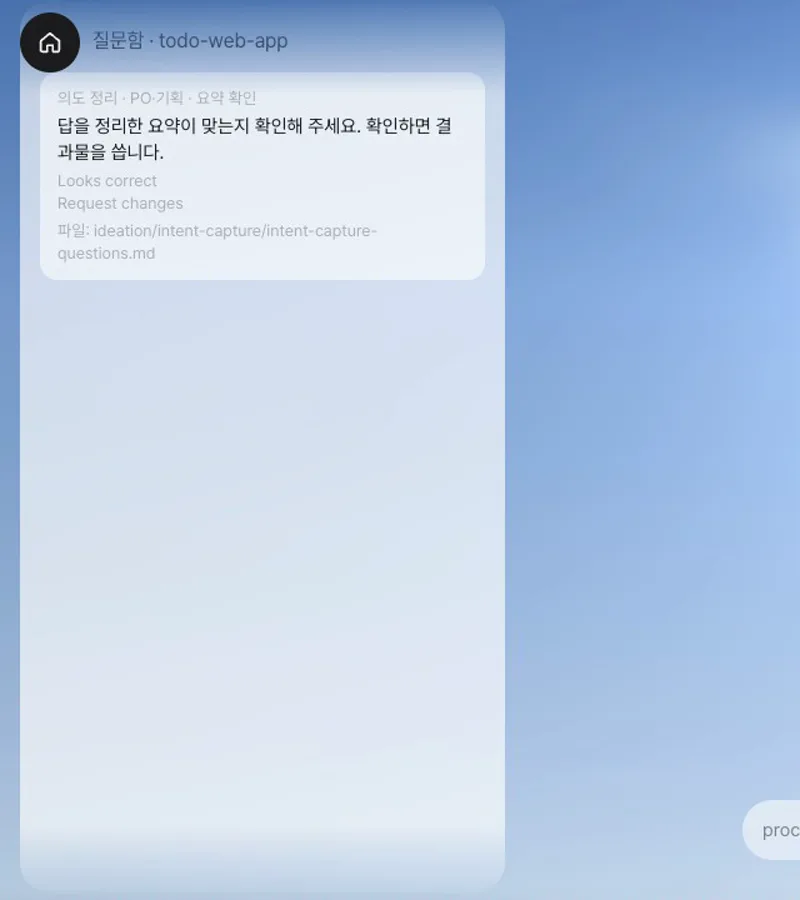
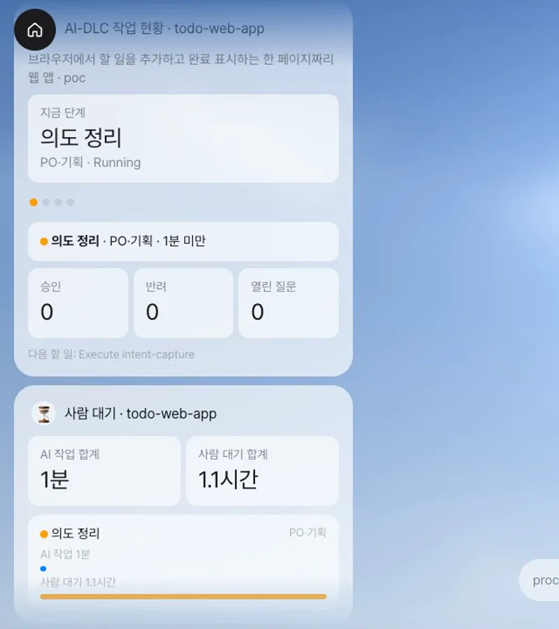

AWS Labs의 AI-DLC로 일하는 저장소를 공유 폴더로 연결하면 폴더 구성원이 작업 현황·사람 대기·볼트·품질·감사 기록·질문을 홈 패널에서 확인합니다. 숫자는 저장소의
aidlc/기록에서 바로 계산하고, AI-DLC가 움직이는 동안 패널을 20초마다 갱신합니다.
왜 필요한가#
이번 장에서는 달빛커피 대신 AI와 함께 개발하는 소프트웨어 팀을 살펴봅니다. AI-DLC(AI-Driven Development Life Cycle)는 AI가 단계마다 질문을 남기고 결과물을 만들면, 사람이 답하고 승인해야 다음 단계로 넘어가는 개발 방식입니다. 진행 기록은 모두 저장소의 aidlc/ 폴더에 남습니다. 현재 단계를 담은 상태 파일, 시간순으로 쌓인 감사 기록, 질문 파일, 검토 보고서입니다. AI-DLC 사용법은 AX School AI-DLC 핸즈온에서 처음부터 따라 해 볼 수 있습니다.
문제는 이 기록을 Claude Code 터미널과 마크다운 파일에서 찾아야 한다는 점입니다. 팀 리드, PO, 아키텍트, QA가 "지금 누가 무엇을 기다리나", "어느 단계에서 사람을 오래 기다렸나"를 알려면 파일을 열어 읽어야 합니다. Lite는 이 기록을 그대로 읽어 각자의 역할에 맞게 홈 패널로 보여 줍니다. 따로 입력할 필요가 없습니다.
| 패널 | 보여 주는 것 | 어디서 계산하나 |
|---|---|---|
| 작업 현황 | 지금 단계와 담당 역할, 단계 레일, 기다리는 승인, 승인·반려·열린 질문 수 | 상태 파일, 감사 기록 |
| 사람 대기 | 단계마다 AI가 일한 시간과 사람을 기다린 시간, 반려 횟수 | 감사 기록의 단계 시작 → 승인 대기 → 승인 |
| 볼트 보드 | 구현 단위(유닛)마다 의존 관계, 상태, 작업 시간, 체크포인트 검증 성공·실패 | 유닛 계획, 감사 기록 |
| 품질 | 센서가 울린 횟수와 실패, 체크포인트 검증, 단계별 마지막 검토 판정과 남은 Major 지적 | 검토 보고서, 감사 기록 |
| 감사 타임라인 | 승인, 수정 요청, 답변, 센서 실패, 검증을 최근 기록부터 | 감사 기록 |
| 질문함 | 답을 기다리는 질문과 선택지, 질문 파일 위치 | 질문 파일 |
준비#
| 항목 | 내용 |
|---|---|
| AI-DLC 저장소 | AI-DLC 2.11.2가 설치된 git 저장소. 실습은 AX School 핸즈온 레벨 2에서 만든 음성 주차 앱 기록(공개 저장소)과, 막 시작한 할 일 웹앱(poc)을 사용합니다 |
| 서버가 읽을 수 있는 경로 | 연결형 폴더는 서버 컴퓨터의 경로를 연결합니다(13장). 설치 번들(Docker)에서는 저장소를 서버 컨테이너에 마운트합니다 |
| 권한 | 폴더에 보기 이상의 권한이 있는 구성원만 대시보드를 봅니다 |
| 등장인물 | 팀 리드 한지수(두 폴더의 소유자), PO 오세린(할 일 웹앱 폴더의 편집 권한) |
따라 하기 1 — 끝난 작업을 홈에서 보기#
- 한지수로 로그인해 폴더에서 음성 주차 앱 저장소를 연결형 폴더로 연결합니다. 이름은
음성 주차 앱입니다. - 폴더를 엽니다. 파일 목록 위에 「AI-DLC 기록이 있어요.」 안내 띠가 나타나고, 작업 목록에
voice-parking · classic · 완료가 있습니다. - 작업을 고르고 홈에 대시보드 추가를 누릅니다. 「홈에 AI-DLC 대시보드 6개를 추가했어요.」가 뜹니다.
- 홈으로 갑니다. 왼쪽 패널 열에 작업 현황부터 질문함까지 패널 여섯 개가 생깁니다. 아래로 스크롤하며 하나씩 확인합니다.




확인할 것: 작업 현황의 승인은 18, 반려는 3입니다. 사람 대기 패널의 합계는 AI 작업 8.2시간, 사람 대기 32분입니다. 볼트 보드에는 유닛 다섯 개가 모두 완료로 표시되고, 결제 서비스와 웹 화면 유닛에는 검증 실패(✗) 뒤 통과한 기록이 있습니다.
따라 하기 2 — 진행 중인 작업이 움직이는 것을 보기#
- 오세린으로 로그인해 할 일 웹앱 폴더를 엽니다. 띠에서
todo-web-app · poc를 고르고 홈에 대시보드 추가를 누릅니다. - 홈의 작업 현황에는 지금 단계가 의도 정리로, 열린 질문이 4로 표시됩니다. 질문함에는 AI-DLC가 남긴 질문 네 개가 선택지와 함께 보입니다.
- Claude Code에서 질문 파일(
intent-capture-questions.md)의[Answer]:에 답을 적습니다. 커밋하지 않아도 20초 안에 질문함이 「답을 기다리는 질문이 없어요」로 바뀝니다. - Claude Code에서 AI-DLC에 "답을 모두 적었어요. 이어서 진행해 주세요."라고 말합니다. AI-DLC는 결과물을 쓰기 전에 답을 요약하고 맞는지 묻습니다. 이 질문이 질문 파일 끝에 추가되므로, 질문함에 요약 확인이 다시 하나 생깁니다.
- Claude Code에서
1(Looks correct)로 답합니다. AI-DLC가 의도 문서를 쓰는 동안 감사 타임라인에 질문에 답한 기록과 확인 요청 등이 쌓입니다. - AI-DLC가 승인을 기다리면, 작업 현황의 대기 칸에 의도 정리 · PO·기획 · 기다린 시간이 나타납니다.



확인할 것: 한지수의 홈에는 할 일 웹앱 패널이 생기지 않습니다. 대시보드는 각자 자기 홈에 추가합니다. 할 일 웹앱 폴더의 구성원이 아닌 사람은 띠와 프로젝트 목록을 모두 볼 수 없습니다.
AI-DLC 핸즈온과 어떻게 이어지나#
이 장의 두 저장소는 AX School AI-DLC 핸즈온의 실습 기록입니다. 음성 주차 앱은 레벨 2(9~18장)를 끝까지 마친 기록이고, 할 일 웹앱은 레벨 1의 6장을 막 시작한 기록입니다. 따라 하기 1은 끝난 기록을 패널별로 되짚고, 따라 하기 2는 첫 단계가 실제로 움직이는 모습을 봅니다. 핸즈온의 장마다 대시보드의 어디에 나타나는지는 다음과 같습니다.
| 핸즈온 장 | AI-DLC 단계 | 대시보드에서 보는 곳 |
|---|---|---|
| 6장 의도 정리와 요구사항 | 의도 정리 → 요구사항 | 질문함(질문 네 개, 요약 확인), 작업 현황의 승인 대기 — 따라 하기 2는 의도 정리의 승인 대기까지입니다 |
| 7장 코드 생성과 학습 | 코드 생성 | 이 장의 영상에는 없습니다 |
| 8장 동작 확인과 감사 기록 | 감사 기록 | 감사 타임라인 |
| 9장 팀 규칙 | 팀 규칙 | 사람 대기 |
| 10장 요구사항 | 요구사항 | 사람 대기 |
| 11장 유저 스토리와 화면 | 유저 스토리, 화면 | 사람 대기 |
| 12장 도메인 설계 | 도메인 설계 | 사람 대기(반려 1), 품질의 검토 회차 |
| 13장 유닛 나누기와 API 계약 | 유닛, API 계약 | 사람 대기(API 계약 반려 1), 볼트 보드의 의존 |
| 14장 볼트 계획 | 볼트 계획 | 사람 대기 |
| 15~17장 구현 u1~u5 | 유닛별 기능 설계·코드 생성 | 볼트 보드(u3·u4는 검증 실패 뒤 통과), 품질의 유닛별 검토 |
| 18장 빌드·테스트와 앱 동작 | 빌드·테스트 | 작업 현황의 지금 단계, 사람 대기(AI 7.7시간 · 사람 7분, 반려 1) |
숫자를 읽는 법#
- AI 작업은 단계를 시작한 때(또는 수정 요청 뒤 다시 시작한 때)부터 승인 대기에 들어간 때까지입니다. 다만 AI-DLC가 질문이나 요약 확인을 남기고 사람의 답을 기다린 동안은 뺍니다.
- 사람 대기는 질문이나 요약 확인의 답을 기다린 시간에 승인 대기부터 승인 또는 반려까지 걸린 시간을 더한 값입니다. 빌드처럼 오래 걸리는 작업 뒤에 기록이 없는 시간도 AI 작업으로 계산합니다.
- 구현 단계는 유닛마다 따로 진행하므로 단계별 시간에서 제외하고 볼트 보드에서 확인합니다. 유닛의 사람 대기는 마지막으로 통과한 검증부터 승인까지입니다.
- 반려는 승인 대기에서 수정을 요청한 횟수입니다. 같은 단계의 검토 보고서가 여러 개이면 품질 패널에 회차(×2)로 표시됩니다.
알아 둘 점#
- 대시보드는 읽기만 합니다. 승인과 반려는 지금처럼 AI-DLC(Claude Code)에서 합니다. 패널 안 스크립트는
/api/aidlc/아래의 읽기 요청만 보낼 수 있습니다. - 작업 사본을 바로 읽으므로 커밋하지 않은 변경 사항도 보입니다. 새 단계의 질문 파일은 최대 15초 늦게 집계될 수 있습니다.
- 기록 파일은 크기나 수정 시각이 바뀔 때만 다시 읽습니다. 실습 기록 전체(사건 1,577건)에서 첫 요약은 약 0.4초, 이후 요약은 5~30ms였습니다.
- 기록 형식은 AI-DLC 2.11.2를 따릅니다.
8부 「산업별 예시」를 마칩니다. 다음 장에서는 지금까지 배운 것을 활용해 새 고객 요청 한 건을 처음부터 끝까지 처리하는 종합 과제를 합니다(31장).
확인 문제
- 사람 대기 패널에서 빌드·테스트 단계는 AI 작업 7.7시간, 사람 대기 7분입니다. 이 단계를 늦춘 쪽은 어디입니까?
- 오세린이 질문 파일에 답을 적고 아직 커밋하지 않았습니다. 대시보드의 질문함은 언제 바뀝니까?
- 음성 주차 앱 폴더의 구성원이 아닌 사람이 그 폴더의 요약 주소를 직접 열면 어떻게 됩니까?
- 작업 현황 패널에서 승인 대기 중인 단계를 승인할 수 있습니까?
답
- AI 쪽입니다. 사람이 판단하는 데는 7분이 걸렸고, 나머지는 AI가 빌드와 테스트를 수정하고 다시 실행한 시간입니다.
- 다음 갱신(20초 안)에 바뀝니다. 패널은 저장소의 작업 사본을 읽기 때문에 커밋을 기다리지 않습니다.
- 요청이 403으로 거부됩니다. 그 사람의 AI-DLC 프로젝트 목록에도 그 폴더가 표시되지 않으며, 패널을 추가할 수도 없습니다.
- 없습니다. 대시보드는 읽기 전용이고 패널 스크립트는 읽기 경로로만 요청을 보낼 수 있습니다. 승인은 AI-DLC 쪽에서 합니다.